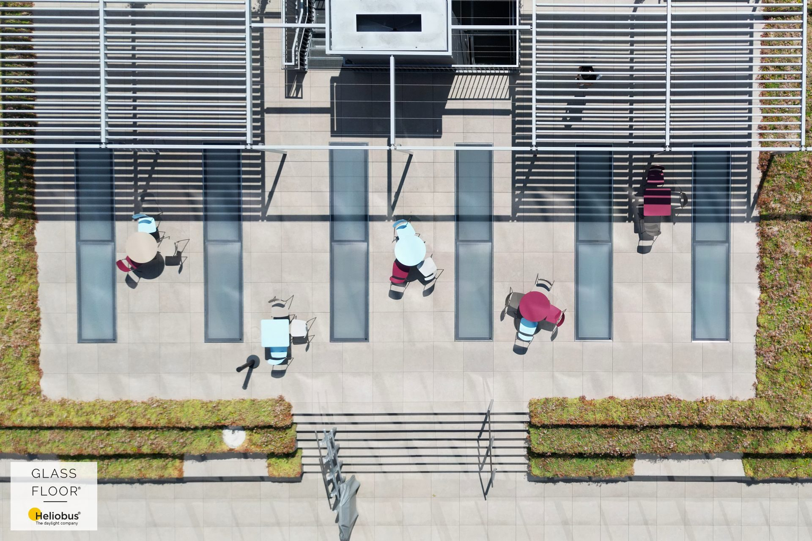
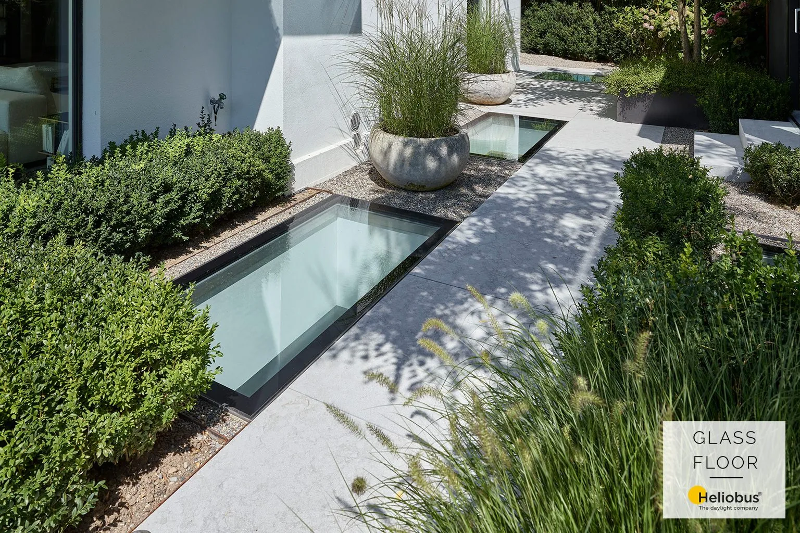
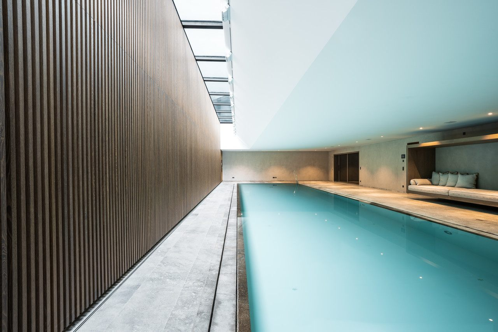
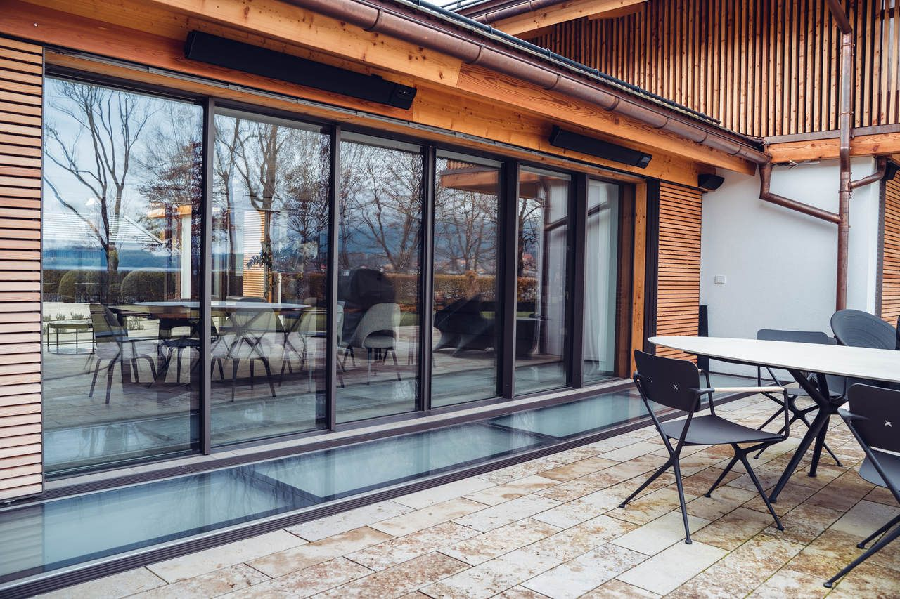
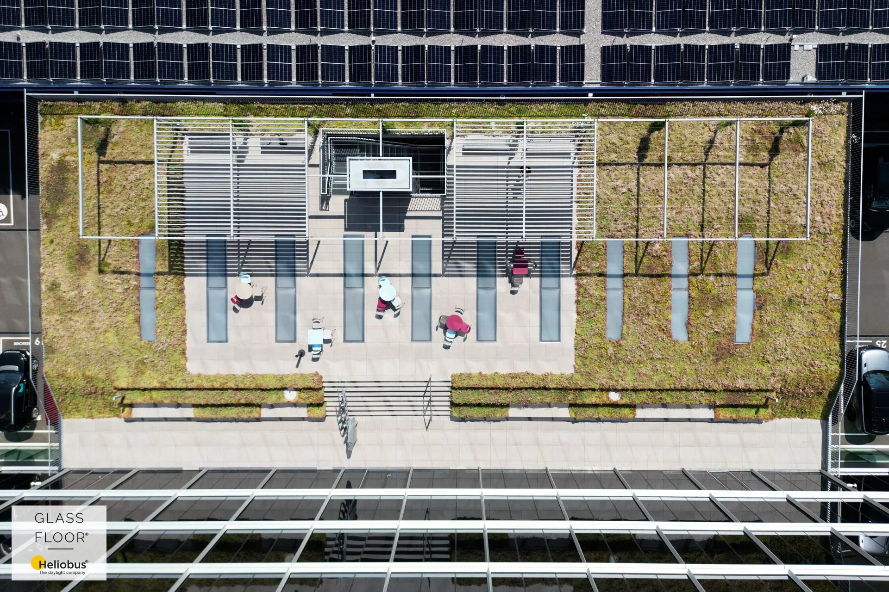
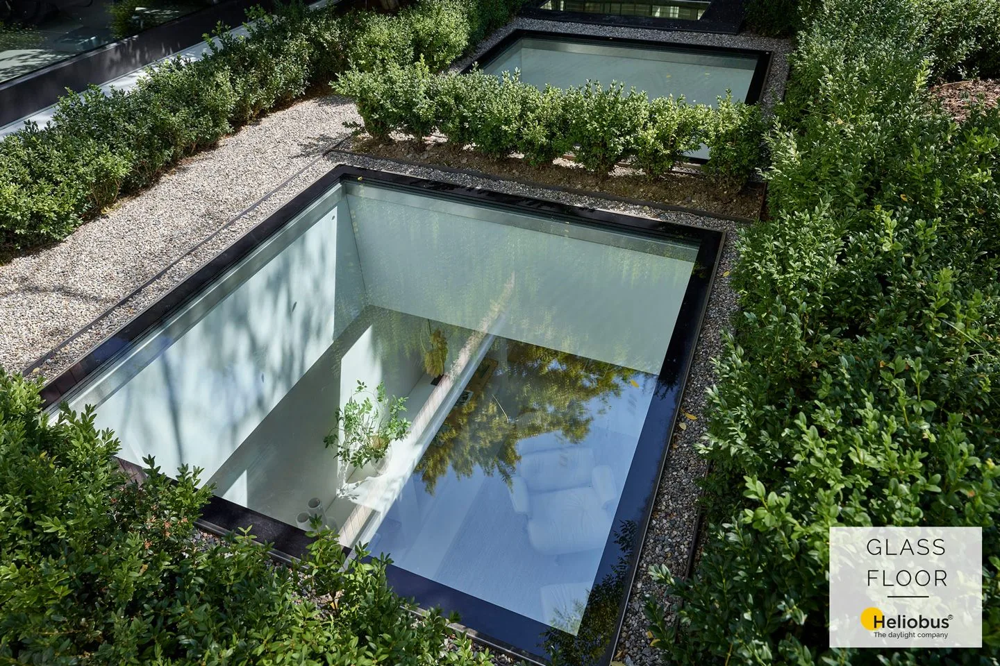
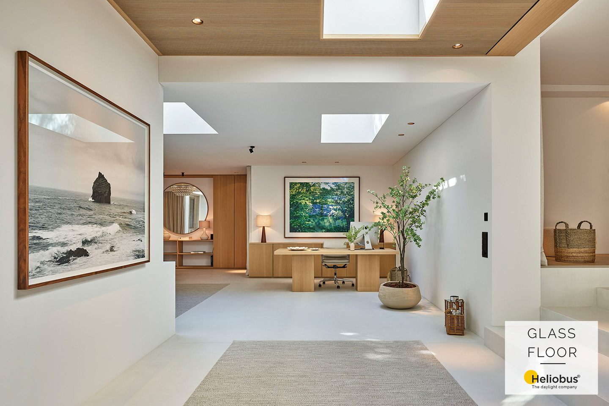
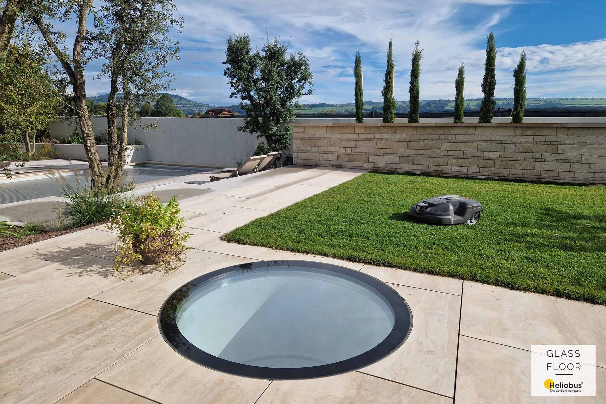
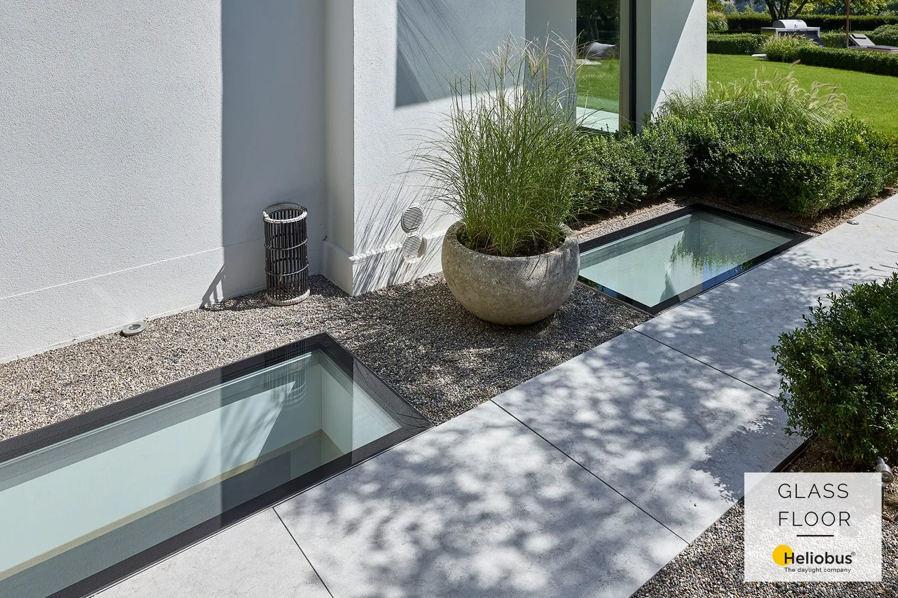
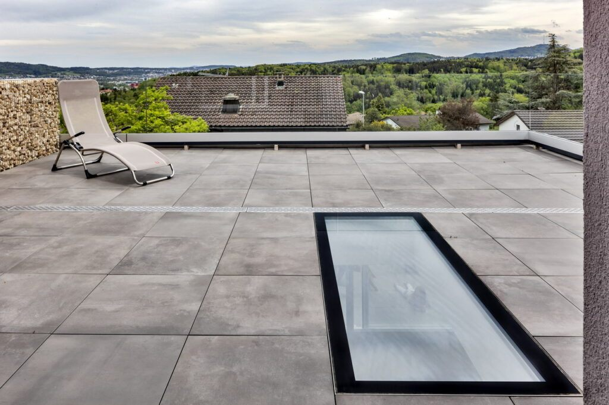

Reference pochozích světlíků GLASSFLOOR.
Vybrané stavby ze Švýcarska, kde pochozí prosklení nahradilo šachty a dvorky denním světlem v rovině terasy, zahrady i střechy.
Vybrané realizace
Zumikon · obytné podlaží pod zahradou
Rodinný dům · Švýcarsko
Zahrada zůstala pochozí v celé ploše. Řada světlíků sleduje chodník podél fasády a o podlaží níž nahrazuje umělé osvětlení denním světlem.


Tegernsee · světelný pás nad hladinou
Nad stropem bazénu zůstala terasa v plném provozu. Liniový pás pochozího zasklení sleduje délku bazénu a přivádí do něj denní světlo.


Administrativa · pochozí střecha kanceláří
Opakované pásy pochozích světlíků prosvětlují nejvyšší podlaží; střecha přitom slouží jako plnohodnotná terasa pro zaměstnance.
Pochozí světlíky v různých podobách stavby.






Chcete podobné řešení?
Pošlete nám základní výkres nebo popis záměru. Posoudíme vhodnost systému GLASSFLOOR a navrhneme další technický postup.
Údaje o rozměrech, doplňcích a požární odolnosti vycházejí z podkladů výrobce Heliobus AG platných k 1. 9. 2026. Závazné jsou vždy podklady ke konkrétní zakázce.